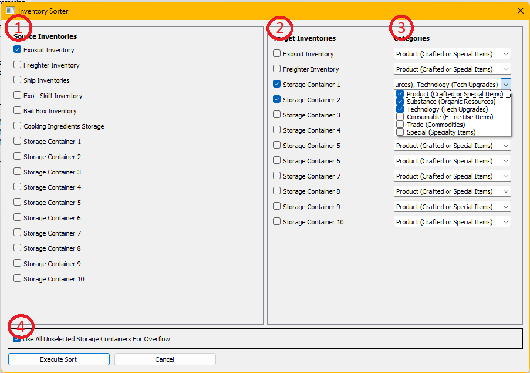

The Inventory Sort Button will allow sorting of inventory items between different inventory storages. Use is fairly straight forward. The Source Inventories (See 1) specify those storages where you want items to be taken from. The Target Inventories (See 2) are the storages where you would like items to be placed. The Catergories (See 3) specify which category of item should be sorted into the Storage container on the same line. Down on the lower left is the 'Use All Unselected Storage Containers for Overflow' (See 4) which will be discussed later.
Use involves setting up the check boxes and then hitting the Execute Sort Button. At that point all items will be moved as indicated by the checkboxes. Items will be moved in this way:
Finally, be aware that the last checkbox settings used during a completed inventory sort will be stored as the default settings for the next use. In other words next time you pull up the dialog, you will see the same checkboxes checked as the last time you hit the 'Execute Sort' button.